설비보전기사(구) (2009-08-30 기출문제)
1과목: 설비 진단 및 계측
1. 진동 차단기의 기본 요구조건이 아닌 것은?
- 진동발생 기계에서 외부로 진동이 잘 전달되도록 해야한다.
- 강성이 충분히 작아서 차단 능력이 있어야 한다.
- 강성은 작되 걸어 준 하중을 충분히 받힐 수 있어야 한다.
- 온도, 습도, 화학적 변화 등에 의해 견딜 수 있어야 한다.
(정답률: 78%)

2. 다음 중 진동 픽업의 종류 중 접촉형이 아닌 것은?
- 압전형
- 서보형
- 동전형
- 와전류형
(정답률: 71%)
3. 회전수를 측정하기 위한 방법이 아닌 것은?
- 반사 테이프를 이용한 광학 측정법
- 회전주기를 측정하고 역수로 회전수를 구하는 측정법
- 자속 밀도의 변화를 이용한 전자식 측정법
- 초음파를 이용한 측정법
(정답률: 82%)
4. 다음 중 기류음 중에서 맥동음을 일으키는 것이 아닌 것은?
- 압축기
- 진공펌프
- 엔진의 배기관
- 선풍기
(정답률: 75%)
5. 다음 중 비접촉 방식의 온도계는?
- 방사 온도계
- 수은 온도계
- 바이메탈 온도계
- 니켈 저항 온도계
(정답률: 80%)
6. 하나의 스프링에 질량 m을 달았더니 δst[mm] 늘어난 경우, 고유 진동수 계산식으로 맞는 것은?
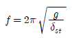
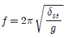
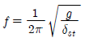
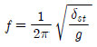
(정답률: 52%)
7. 선팽창 계수가 서로 다른 2종의 금속을 접합시켜 온도의 계측 및 제어장치에 이용하는 것을 무엇이라 하는가?
- 바이메탈(bimetal)
- 자이로스코프(gyroscope)
- 벨로즈(bellows)
- 부르동 관(bourdon tube)
(정답률: 70%)
8. 주파수가 50Hz, 100Hz 인 두 개의 파동이 만나면 나타나는 파동은?
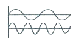
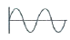
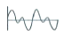
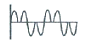
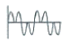
(정답률: 69%)
9. 저항측정에 주로 사용되는 회로는?
- 휘트스톤 브리지 회로
- 열전대 회로
- 부저식 레벨 센서 회로
- 포텐셔 미터 회로
(정답률: 82%)
10. 소음 방지법 중 흡음에 관련된 내용으로 잘못 된 것은?
- 소음원에 가까운 거리에서는 직접음에 의한 소음이 압도적이다.
- 직접소음은 거리가 2배 증가함에 따라 6dB 감소한다.
- 흡음재의 시공 시 벽체와의 공간은 저주파 흡음 특성을 저해하므로 주의해야 한다.
- 흡음재의 내구성 부족 시 유공판으로 보호해야 하며, 이때 개공률과 구멍의 크기 및 배치가 중요하다.
(정답률: 67%)
11. 소음과 진동에 대한 용어 설명 중 잘못된 것은?
- 소음과 진동은 본질적으로 동일한 물리현상이며 측정방법이 동일하다.
- 소음과 진동은 진행과정에서 상호 교환발생이 가능하다
- 소음은 주로 대기, 진동은 고체를 통하여 주로 전달된다.
- 소음 과 진동은 매질의 탄성에 의해서 초기 에너지가 매질의 다른 부분으로 전달되는 현상이다.
(정답률: 70%)
12. 회전기계에 발생하는 언밸런스(unbalance), 미스얼라인먼트(misalignment) 등의 이상현상을 검출할 수 있는 설비진단 기법은?
- 진동법
- 페로그래피법
- X선 투과법
- 원자 흡광법
(정답률: 81%)
13. 다음 열거하는 설비결함을 가장 쉽게 발견 할 수 있는 기기는?
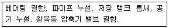
- 초음파 측정기
- 진동측정기
- 윤활 분석기
- 소음 측정기
(정답률: 62%)
14. 제어량과 목표값을 비교하고 그들이 일치되도록 정정동작을 하는 제어는?
- 피드백 제어
- 시퀀스 제어
- 프로그램 제어
- 조건 제어
(정답률: 80%)
15. 상한과 하한의 거리 혹은 중립점에서 상한 또는 하한까지의 거리를 나타내는 진폭의 표시 방법은?
- 주파수
- 변위
- 속도
- 가속도
(정답률: 75%)
16. 다음 중 회로시험계(멀티 테스터)로 측정할 수 없는 것은?
- 교류 전압
- 직류 전압
- 직류 전류
- 주파수
(정답률: 79%)
17. 단순 진동자의 운동이 정현적으로 발생하고 있다. 진동 속도가 v[m/s](피크값)이고, 이때의 진동 주파수가 f[Hz]일 때의 진동 가속도 [m/s2]를 구하는 식은?
- 2π × f × v
- 1/2π × f × v
- 2π × f/v
- 1/2π × f/v
(정답률: 71%)
18. 음파가 한 매질에서 다른 매질로 통과할 때 구부러지는 현상은?
- 음의 회절
- 음의 굴절
- 맥놀이(beat)
- 도플러(doppier) 효과
(정답률: 78%)
19. 설비진단 기술 도입의 일반적인 효과가 아닌 것은?
- 점검원이 경험적인 기능과 진단기기를 사용하면 보다 정량화 할 수 있어 누구라도 능숙하게 되면 동일 레벨의 이상 판단이 가능해 진다 .
- 경향관리를 실행함으로써, 설비(부위)의 수명을 예측하는 것이 가능하다.
- 중요설비, 부위를 상시 감시함에 따라 돌발적인 중대 고장 방지가 가능해진다.
- 정밀진단을 통해서 설비관리가 이루어지므로 오버홀(overhaul)의 횟수가 증가하게 된다.
(정답률: 83%)
20. 진동계의 강제 진동에서 외력의 크기를 일정하게 하고 주파수를 변화 시키면 진동계의 고유 진동수 부근에서 진동 값이 급격히 극대치로 되는 현상은
- 공진 현상
- 회전체의 불평형 진동 현상
- 강제 진동 현상
- 정상진동 현상
(정답률: 72%)
2과목: 설비관리
21. 어느 기간 내의 부하의 전력량을 그 기간의 전 시간수로 나눈 것으로, 그 기간 내의 부하의 평균치를 무엇인가?
- 부하율
- 부등률
- 평균 부하
- 설비 이용률
(정답률: 55%)
22. 수리공사의 목적 분류 중 설비검사에 의해서 계획하지 못했던 고장의 수리를 무엇이라고 하는가?
- 사후 수리 공사
- 예방 수리 공사
- 보전 개량 공사
- 돌발 수리 공사
(정답률: 71%)
23. 다음 중 설비 배치의 목적으로 틀린 것은?
- 우량품의 제조 및 설비비의 절감
- 배치 및 작업의 탄력성 유지
- 공장 환경과 무관하게 생산성을 고려하여 배치
- 공간의 경제적 사용 및 노동력의 효과적 활용
(정답률: 78%)
24. 하나의 설비 또는 시스템이 설계, 생산되어 가동, 보수휴지 및 폐기할 때까지의 전 과정에 필요한 비용을 무슨 비용이라고 하는가?
- 보전비용
- 초기비용
- 생애비용
- 공통비용
(정답률: 77%)
25. 공정에서 취한 계량치 데이터가 여러 개 있을 때, 데이터가 어떤 값을 중심으로 어떤 모습으로 산포하고 있는가를 조사하는데 사용하는 것은?
- 히스토그램
- 파레토도
- 체크시트
- 관리도
(정답률: 73%)
26. 설비를 목적에 따라 분류한다면, 생산, 유용, 연구개발, 수송 판매, 관리 설비 등으로 구분할 수 있다. 이때 관리 설비에 해당되지 않는 것은?
- 사택이나 기숙사, 병원, 식당 등의 복리후생설비
- 보전시설, 보전창고, 방화설비 등의 공장보조설비
- 전용부두, 하역설비, 소화설비 등의 항만 설비
- 냉난방설비, 전자계산기 등과 같은 공장의 관리 설비
(정답률: 72%)
27. 설비보전의 목적과 그것을 이루기 위한 방안이 서로 맞지 않는 것은?
- 생산성 향상 : 설비의 성능저하 방지
- 품질 향상 : 설비로 인한 가공 불량 방지
- 원가 절감 : 설비 개선에 의한 수율 향상 방지
- 납기 관리 : 돌발고장 방지
(정답률: 63%)
28. 치공구 관리의 기능 중 계획 단계인 것은?
- 공구의 제작 및 수리
- 공구의 검사
- 공구의 보관과 대출
- 공구의 설계 및 표준화
(정답률: 75%)
29. 자주보전을 효과적으로 완성하기 위한 자주보전 전개 스텝이 있다. 추진 방법의 절차가 올바른 것은?
- 총점검 → 초기 청소 → 발생원 곤란개소 대책 → 점검. 급유 기준작성 → 자주 점검 → 자주보전의 시스템화 → 자주 관리의 철저
- 자주점검 → 발생원 곤란개소 대책 → 점검, 급유 기준 작성 → 초기 청소 → 총점검 → 자주보전의 시스템화 → 자주관리의 철저
- 총점검 → 초기 청소 → 점검. 급유 기준작성 → 발생원 곤란 개소 대책 → 자주 점검 → 자주보전의 시스템화 → 자주관리의 철저
- 초기 청소 → 발생원 곤란개소 대책 → 점검, 급유 기준 작성 → 총점검 → 자주점검 → 자주보전의 시스템화 → 자주관리의 철저
(정답률: 76%)
30. 설비공학을 분류할 때 AIPE에서는 설비 기술자의 임무를 다섯 부분으로 대별하고 있다. 이런 임무에 해당되지 않는 것은?
- 설비 배치와 설계
- 건설과 설치
- 공장의 방제
- 고정 자산 관리
(정답률: 58%)
31. 기본 보전 업무로 볼 수 없는 것은?
- 고장 점검 수리
- 교정
- 수리
- 설계
(정답률: 77%)
32. TPM 의 설명을 가장 잘 나타낸 수식은?
- TPM = 생산보전 + 작업자 자주보전
- TPM = 예방보전 + 작업자 자주보전
- TPM = 사후보전 + 작업자 자주보전
- TPM = 일상보전 + 작업자 자주보전
(정답률: 45%)
33. 품질보전이 설비 문제와 밀접한 관계를 갖고 있는 이유가 아닌 것은?
- 제조현장의 자동화, 설비고도화 등으로의 변화
- 설비의 상태에 따라 제품의 품질이 확보되는 시대의 도래
- 품질에 영향을 끼치는 설비고장은 돌발고장형보다 기능 저하형이 주류
- 생산 공정 중에 발생하는 공정불량의 최소화에 대한 무관심
(정답률: 73%)
34. 긴급도비율 이라는 비율을 도입하여 투자순위를 결정하는 것은?
- 자본 회수법
- 비용비교법
- 수익률 비교법
- 신 MAPI 방식
(정답률: 71%)
35. 어떤 설비에 대한 시간 가동률을 산출하려고 한다. 지난 1주간의 설비 가동 현황이 아래와 같은 때 시간 가동률은 몇 % 인가?(오류 신고가 접수된 문제입니다. 반드시 정답과 해설을 확인하시기 바랍니다.)
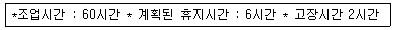
- 96.3
- 90.0
- 86.7
- 82.0
(정답률: 50%)
36. 보전작업표준을 설정하기 위한 특징 중 실적기록에 입각해서 작업의 표준시간을 결정하는 방법은 다음 중 어느것인가?
- 실적 자료법
- 경험법
- M.T.M 법
- P.T.S 법
(정답률: 76%)
37. PM 분석에서 P 의 의미에 대한 설명으로 맞는 것은?
- 현상의 명확화와 메커니즘을 해석한다.
- 설비의 메커니즘을 분석하고 이해한다.
- 현상을 물리적으로 해석한다.
- 작업방법과 관련성을 추구하는 요인해석의 사고방식이다.
(정답률: 61%)
38. 설비관리에 대한 설명으로 거리가 먼 것은?
- 설비의 일생을 통하여 설비를 잘 활용함으로써 기업이 목적하는 생산성을 높이게 하는 활동이다.
- 끊임없는 설비개선을 통하여 설비의 자동화를 확대함으로써 설비의 가동률을 향상시켜 기업의 이익에 연계되도록 하는 활동이다.
- 설비관리란 용어는 영어의 Plant Engineering을 의역한 것으로, 설비의 적극적인 목적을 갖는 여러 활동과 관리기술까지를 포함한 모든 것을 총칭하는 것으로 해석할 수 있다.
- 설비에 대한 계획, 유지, 개선을 행함으로써 설비의 기능을 가장 효율적으로 활용하는 일체의 활동이다
(정답률: 61%)
39. 보전도(Maintainability)의 정의로 틀린 것은?
- 설비가 규정된 절차에 따라 운전될 때 부품이나 설비의 운전상태가 어느 성능 이하로 떨어질 확률
- 설비가 적정 기술을 가지고 있는 사람에 의하여 규정된 절차에 의하여 운전될 때 보전이 주어진 기간 내에서 주어진 횟수 이상으로 요구되지 않을 확률
- 설비가 규정된 절차에 따라 운전 및 보전될 때 설비에 대한 보전 비용이 주어진 기간 동안 어느 비용 이상 비싸지지 않을 확률
- 보전이 규정된 절차와 주어진 자원을 가지고 행하여질 때 어떤 부품이나 시스템으로부터 생산되는 생산량이 어느 불량률 이상 되지 않을 확률
(정답률: 43%)
40. 설비효율화 저해 손실에 해당하는 것은?
- 고장손실
- 보수유지손실
- 에너지 손실
- 관리 손실
(정답률: 66%)
3과목: 기계일반 및 기계보전
41. 결정구조의 구성이 붕소(B) 및 질소(N) 원자로 이루어져 있고 주철, 담금질강 등에 뛰어난 가공성을 가진 공구는?
- 입방정 질화 붕소(CBN)
- 다이아몬드(Diamond)
- 서멧(Cermet)
- 소결 초경합금(Sintered hard metal)
(정답률: 66%)
42. 일반적인 줄 작업에 대한 설명 중 틀린 것은?
- 오른발은 30° 정도, 왼발은 70° 정도로 바이스 중심선을 향해 반우향 한다.
- 황목 → 중목 → 세목 → 유목의 순으로 사용한다.
- 왼손은 줄의 균형을 유지하기 위해 손목을 수평으로 하고 손바닥으로 줄 끝을 가볍게 누르거나 손가락으로 싸준다.
- 줄을 앞으로 밀 때 힘을 가하고 뒤로 당길 때 힘을 주지 않는다.
(정답률: 57%)
43. 보전용 재료 중 방청 윤활유의 종류가 아닌 것은?
- 1종 (1호) : KP-7
- 1종(2호) : KP-8
- 1종 (3호) : KP-9
- 1종(4호) : KP-10
(정답률: 77%)
44. 용접으로 인한 잔류응력을 제거하는 방법으로 가장 적합한 것은?
- 담금질
- 풀림
- 불림
- 뜨임
(정답률: 66%)
45. 기어 전동장치에서 두 축이 평행한 기어는?
- 베벨 기어
- 스큐 기어
- 웜 기어
- 스퍼 기어
(정답률: 70%)
46. 세이퍼 가공에서 램의 1분간 왕복 횟수n[stoke/min], 행정길이 L[mm], 바이트 1회 왕복과 절삭 행정의 비 k 일때 절삭속도 V[m/min] 산출식으로 올바른 것은?
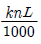
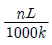
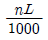
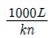
(정답률: 57%)
47. 고압 증기 압력제어 밸브의 동작 시 방출되는 유체가 스프링에 직접 접촉될 때 스프링의 온도상승으로 인한 탄성계수의 변화로 설정압력이 점진적으로 변하는 현상은?
- blowdown
- crawl
- hunting
- back pressure
(정답률: 59%)
48. 스퍼기어의 정확한 치형 맞물림에 대한 것을 맞는 것은?
- 치형 축 방향 길이 80% 이상, 유효 이 높이 20% 이상 닿아야한다
- 치형 방향 길이 70% 이상, 유효 이 높이 30% 이상 닿아야 한다.
- 치형 방향 길이 60% 이상, 유효 이 높이 40% 이상 닿아야 한다.
- 치형 축 방향 길이 50%, 이상, 유효 이 높이 50% 이상 닿아야 한다.
(정답률: 73%)
49. 다음 중 원심식과 비교한 왕복식 압축기의 장점은?
- 고압 발생이 가능하다
- 대용량이다.
- 윤활이 쉽다.
- 압력 맥동이 없다.
(정답률: 68%)
50. 전동기의 기동불능 현상에 대한 원인이 아닌 것은?
- 단선
- 서머릴레이 작동
- 기계적 과부하
- 코일 절연물의 열화
(정답률: 58%)
51. 다음 중 스프링의 제도방법 중 옳지 않은 것은?
- 겹판스프링은 스프링판이 수평한 상태에서 그리는 것을 원칙으로 한다.
- 하중이 가해진 상태에서 그려서 치수를 기입 시에는 하중을 기입한다.
- 도면에서 특별히 지시가 없는 코일 스프링은 오른쪽 감김을 나타낸다.
- 부품도, 조립도 등에서 양 끝을 제외한 동일 모양부분을 생략하는 경우에는 가는 실선으로 표시한다.
(정답률: 63%)
52. 현재 보유하고 있는 설비가 신품일 때와 비교하여 점차로 열화되어 가는 것을 무엇이라고 하는가?
- 기술적 열화
- 경제적 열화
- 절대적 열화
- 상대적 열화
(정답률: 50%)
53. 너트의 일부를 절삭하여 미리 내측으로 변형을 준 후 볼트에 체결 할 때 나사부가 압착하게 되는 이완 방지법은?
- 절삭너트에 의한 방법
- 로크너트에 의한 방법
- 특수너트에 의한 방법
- 분할핀 고정에 의한 방법
(정답률: 73%)
54. 축 고장의 원인 중 조립, 정비불량의 직접적인 원인인 것은?
- 재질 불량
- 축이 휘어짐
- 치수, 강도 부족
- 형상 구조 불량
(정답률: 59%)
55. 다음 중 연삭 가공법의 종류에 해당되지 않는 것은?
- 호닝(honing)
- 버핑(buffing)
- 래핑(lapping)
- 보링(boring)
(정답률: 64%)
56. 축의 도시방법으로 틀린 것은?
- 축이나 보스의 끝 구석 라운드 가공부는 필요시 확대하여 기입하여 준다.
- 축은 일반적으로 길이 방향으로 절단하지 않으며 필요시 부분 단면은 가능하다.
- 긴축은 단축하여 그릴 수 있으나 길이는 실제길이를 기입한다.
- 원형축의 일부가 평면일 경우 일점쇄선을 대각선으로 표시한다.
(정답률: 67%)
57. 스퍼기어의 제도 시 항목표 기입 사항이 아닌 것은?
- 압력각
- 표면거칠기
- 이수
- 치형
(정답률: 69%)
58. 송풍기에 진동이 많이 발생하는 원인이 아닌 것은?
- 임펠러의 불균형
- 기초 볼트의 이완
- 임펠러 이물질 부착
- 송풍기 벨트 이완
(정답률: 63%)
59. 압축기의 배관에 대한 설명으로 맞는 것은?
- 배관 길이는 가능한 길게 한다.
- 압축기와 탱크 사이의 배관은 클수록 좋다.
- 배관 도중의 하부에는 반드시 드레인 밸브를 부착한다.
- 압축기의 분해 조립과 관계없이 크게 한다.
(정답률: 75%)
60. 측정공구 중 비교 측정에 사용되는 측정기는?
- 마이크로미터
- 버니어 캘리퍼스
- 측장기.
- 옵티미터
(정답률: 57%)
4과목: 윤활관리
61. 윤활업무를 윤활 담당자의 업무와 급유원의 업무로 나누어서 볼 때 급유원의 업무와 관계가 먼 것은?(단, 계획업무와 실시업무를 구분 시행 할 경우)
- 기계설비에 있어서 윤활면의 일상 점검, 급유
- 급유장치의 운전 및 간단한 보수
- 표준 유량 결정 및 윤활작업 예정표 작성
- 윤활제의 육안검사 및 간단한 윤활제의 교환
(정답률: 69%)
62. 다음 중 액상 윤활유에 해당되지 않는 것은?
- 광유
- 그리스
- 지방유
- 합성유
(정답률: 73%)
63. 윤활유로서 베어링을 윤활하고자 할 때 고려해야 할 일반적인 선정 기준으로 거리가 먼 것은?
- 적정 점도
- 나프텐기유의 선택
- 급유 방법 및 주위 환경
- 운전 속도
(정답률: 71%)
64. 유압 작동유의 필요한 성상이 아닌 것은?
- 온도변화에 따른 점도의 변화가 적어야 한다.
- 증기압이 높고 비점이 낮아야 한다.
- 산화안정성이 좋아야 한다.
- 항유화성(抗乳化性)이 좋아야 한다.
(정답률: 68%)
65. 윤활유의 카본(carbon) 및 슬러지(sludge) 가 압축기에 미치는 영향이 아닌 것은?
- 윤활 방해, 마모 증대 및 온도 상승 동력비 증가
- 밸브 작동 이상, 재압축 현상, 압축 효율 저하
- 오일 필터 막힘, 오일 청정성 불량, 부품 교체비용 증가
- 밀봉 작용 불량, 유수 분리 불량, 압축 효율 증대
(정답률: 61%)
66. 윤활유 열화의 직접적인 원인과 거리가 먼 것은?
- 내부 변화 (윤활유 자체의 변화)
- 연료유 및 이종유 희석
- 유화(물)
- 0.3~0.4% 황분 함유
(정답률: 63%)
67. 다음은 왕복동 압축기 윤활과 관련된 내용들이다. 옳지 않는 것은?
- 압축기용 윤활유는 탄화 경향이 적고 압축가스에 대해 안정해야 한다.
- 카본 및 슬러지는 윤활 방해 밸브작동 이상을 일으키며, 압축 효율을 감소시킨다.
- 압축기용 윤활유는 점도가 너무 높으면 내부 저항이 작아지고 윤활유의 탄화 경향도 작아진다.
- 흡입 공기의 고온도와 오염도는 토출 공기의 온도상승과 카본 퇴적을 촉진 시킨다.
(정답률: 64%)
68. ISO VG 32 와 320에 대한 설명 중 옳지 않은 것은?
- ISO VG 32는 점도 등급을 나타낸 것이다.
- 32는 동점도의 중심값은 나타낸 것이다.
- 점도 등급의 32와 320 중에서 32가 고점도 오일이다.
- 동점조의 단위는 mm2/s를 사용한다.
(정답률: 60%)
69. 중, 저속의 밀폐기어, 감속기 내의 베어링 하우징 등 윤활 개소의 일부가 오일 배스(Oil Bath)에 잠긴 상태로 윤활되는 방식의 급유법은?
- 링(유환) 급유
- 유욕식 급유
- 순환 급유
- 비산 급유
(정답률: 73%)
70. 그리스 윤활의 단점이 아닌 것은?
- 급유, 교환, 세정 등이 어렵다.
- 초기 회전 시 회전저항이 크다.
- 급유량 조절이 곤란하다
- 유동성이 나쁘기 때문에 누설이 크다.
(정답률: 67%)
71. 다음 그리스 시험 방법 중 기계적 안정성을 평가하는 시험은?
- 주도
- 적점
- 혼화안정도
- 이유도
(정답률: 60%)
72. 베어링의 그리스 윤활에서 그리스 선정 조건이 아닌 것은?
- 온도
- 속도
- 하중
- 비열
(정답률: 67%)
73. 다음 중 윤활유의 열화에 의해 나타나는 현상이 아닌 것은?
- 산가의 감소
- 점도 변화
- 수분 증가
- 색상 변화
(정답률: 61%)
74. 윤활관리의 방법이나 설비관리의 내용 중 맞지 않는 것은?
- 그리스는 많이 주입 할수록 좋다.
- 설비에 수분과 이물질이 들어가지 않도록 한다.
- 오일 온도는 적정 온도로 항상 일정하게 유지하여야 한다.
- 오일의 오염도는 NAS 등급을 사용한다.
(정답률: 79%)
75. 윤활 관리의 목적이 아닌 것은?
- 설비 가동률의 증대
- 준비 교체 효율의 향상
- 설비 수명의 연장
- 유지비의 절감
(정답률: 59%)
76. 페로그라피(ferrography)에 대한 설명으로 올바른 것은?
- 마멸입자 분석법이다
- 수분함유량 시험방법이다.
- 패취 시험방법이다.
- 점도 시험방법이다.
(정답률: 65%)
77. 전손식 급유방법이 아닌 윤활방식은?
- 손 급유
- 적하 급유
- 심지 급유
- 순환 급유
(정답률: 57%)
78. R&O 윤활유를 보통 하중에 사용하고자 할 때 사용이 곤란한 기어는?
- 평 기어
- 헬리컬 기어
- 베벨 기어
- 하이포이드 기어
(정답률: 61%)
79. 다음 중 윤활유의 탄화와 관계가 없는 것은?
- 공기 중의 산소 흡수
- 고온 표면과 의 접촉
- 열전도 속도보다 산소와의 반은 속도가 늦음
- 윤활유의 가열 분해
(정답률: 56%)
80. 윤활 설비의 마모 메커니즘과 원인에 대하여 연결이 잘못된 것은?
- 부식 마멸 - 부식성 용제나 산성 물질에 의한 마모
- 표면피로 마멸 - 반복되는 충격으로 인한 마모
- 침식 마멸 - 금속과 금속의 직접 접촉으로 인한 마모
- 연삭 마멸 - 경도가 작은 표면에 단단한 입자가 분포되어 있고, 상대적인 미끄럼 운동이 있을 때 발생하는 마멸
(정답률: 58%)
5과목: 공유압 및 자동화
81. 설비의 생산성을 높이는 가장 효율적인 보전을 생산보전(Productive Maintenance)이라 한다. 생산보전을 수행하기 위한 수단으로 고장이 발생되지 않도록 열화를 방지하고, 측정함으로써 열화를 조기에 복원시키기 위한 점검, 정비 등을 사전에 행하는 보전 방법은?
- 개량 보전(Corrective Maintenance)
- 예방 보전(Preventive Maintenance)
- 사후 보전(Break-Down Maintenance)
- 품질 보전(Maintenance of Quality)
(정답률: 77%)
82. 다음 중 작업 경험 등을 반영하여 적절한 작업을 행하는 제어기능을 가진 로봇은?
- 플레이백 로봇
- 학습제어 로봇
- 감각제어 로봇
- 수치제어 로봇
(정답률: 74%)
83. 다품종 생산을 위한 유연성 생산 시스템을 무엇이라 하는가?
- FA
- FMS
- CIM
- IMS
(정답률: 70%)
84. 다음 중 포핏(poppet) 형 밸브의 구성 요소가 아닌 것은?
- 디스크
- 원추
- 볼
- 스풀
(정답률: 52%)
85. 유압실린더에서 부하가 일정하고 정부하인 경우 손실이 가장 적은 속도제어는?
- 미터 인 회로
- 미터 아웃 회로
- 블리드 오프 회로
- 로크 회로
(정답률: 38%)
86. 유압의 장점을 설명한 것으로 맞는 것은?
- 공압보다 작동 속도가 빠르다.
- 입력에 대한 출력의 응답이 빠르다.
- 전기회로에 비해 구성작업이 용이하다.
- 외부 누설과 관계없다.
(정답률: 44%)
87. 다음 그림과 같이 솔레노이드 작동 스프링 복귀형의 4포트 2위치 밸브에서 B포트를 막으면 어떤 밸브가 되는가?
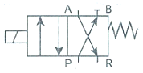
- 2포트 2위치 정상상태 열림형 밸브
- 2포트 2위치 정상상태 닫힘형 밸브
- 3포트 2위치 정상상태 열림형 밸브
- 3포트 2위치 정상상태 닫힘형 밸브
(정답률: 57%)
88. 다음 중 축압기(accumulator)를 사용하는 목적이 아닌 것은?
- 충격 완충
- 유압 펌프의 맥동 제거
- 압력 보상
- 유압장치 온도 상승 방지
(정답률: 52%)
89. 압력에 관한 설명으로 옳지 않은 것은?
- 절대압력 = 계기압력 + 표준 대기압
- 대기압보다 높으면 정압, 낮으면 부압이라 한다.
- 절대 진공도 = 표준 대기압 + 진공계 압력이다.
- 진공도는 항상 절대 압력으로 나타낸다.
(정답률: 47%)
90. 그림과 같은 블록선도에서 종합 전달 함수 C/R는?
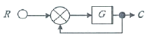
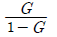
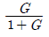
- 1 + G
- 1 - G
(정답률: 64%)
91. 방향 제어 밸브의 조작 방식의 그림과 설명이 맞지 않는 것은?
- 누름버튼 방식 :
- 페달 방식 :
- 플런저 방식 :
- 전자 방식 :
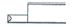
(정답률: 59%)
92. 공압 장치에서는 압축된 공기를 사용하여 필요에 따라 윤활을 한다. 압축 공기를 사용하는 윤활의 목적이 아닌 것은?
- 기기의 윤활
- 마모의 감소
- 공기 사용량 절감
- 부식 방지
(정답률: 68%)
93. 다음 중 케이블 절연 진단 방법이 아닌 것은?
- 교류 전류 시험
- 부분 방전 시험
- 내전압 시험
- 연동 시험
(정답률: 61%)
94. 압축기에서 생산된 압축 공기를 공기압 기기에 공급하기 위한 배관은 소홀히 할 경우 발생하는 문제가 아닌 것은?
- 압력 강하 발생
- 유량의 부족
- 탱크의 압력 상승
- 수분에 의한 부식
(정답률: 59%)
95. 다음 중 펌프 장치에서 발생하는 현상이 아닌 것은?
- 공동 현상(cavitation)
- 수격 현상(water hammering)
- 채터링 현상 (chattering)
- 맥동 현상(surging)
(정답률: 58%)
96. 파스칼의 원리에 대한 설명으로 틀린 것은?
- 정지하고 있는 유체의 압력은 그 표면에 수직으로 작용한다.
- 정지하고 있는 유체의 압력 세기는 모든 방향으로 같게 작용한다.
- 정지하고 있는 유체의 압력은 그 유체 내의 어디서나 같다.
- 정지하고 있는 유체의 체적은 압력에 반비례하고 절대 온도에 비례한다.
(정답률: 59%)
97. 편로드 유압 실린더의 설계에 관한 내용 중 잘못된 것은?
- 실린더의 팽창과정과 수축과정에서 속도는 수축과정이 더 빠르다.
- 패킹을 내유성 고무로 사용할 경우 그 기호는 H로 표시된다.
- 유압 실린더의 호칭에는 규격번호 또는 명칭, 구조형식, 지지형식의 기호, 행정길이 등이 포함된다.
- 실린더 튜브 양단은 단조한 둥근 뚜껑으로 하는 것이 좋고, 양쪽 다 분리할 수 없도록 한다.
(정답률: 63%)
98. 변압기의 원리로 맞는 것은?
- 자기 유도 작용
- 전자 유도 작용
- 주파수 변조 작용
- 정전기 유도 작용
(정답률: 49%)
99. 유압장치에서 가장 많이 사용되는 압력 제어 밸브로 회로의 최고 압력을 제한하는 밸브는?
- 압력 스위치
- 릴리프 밸브
- 시퀀스 밸브
- 압력보상형 유량조절 밸브
(정답률: 66%)
100. 충격 실린더의 사용 목적으로 적당한 것은?
- 스틱슬립 현상을 방지하기 위해
- 충격을 흡수하여 기기를 보호하기 위해
- 균일한 속도를 얻기 위해
- 순간적인 큰 힘을 얻기 위해
(정답률: 59%)
진동 차단기는 진동 발생 기계에서 발생하는 진동을 외부로 전달되지 않도록 차단하는 역할을 합니다. 따라서 "진동발생 기계에서 외부로 진동이 잘 전달되도록 해야한다."는 오히려 반대되는 요구조건입니다.
강성이 충분히 작아서 차단 능력이 있어야 한다는 것은 진동 차단기가 충격을 흡수하고 진동을 차단할 수 있는 능력을 갖추어야 한다는 것입니다. 강성은 작되 걸어 준 하중을 충분히 받힐 수 있어야 한다는 것은 진동 차단기가 일정한 하중을 받았을 때 변형이 적어야 한다는 것입니다. 온도, 습도, 화학적 변화 등에 의해 견딜 수 있어야 한다는 것은 진동 차단기가 환경적인 변화에도 믿을 수 있는 성능을 유지할 수 있어야 한다는 것입니다.